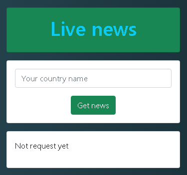

Este proyecto lo programé en JavaScript y Bootstrap, es una calculadora básica.
Puede realizar cuatro operaciones: suma, resta, división y multiplicación.
En la pantalla se muestran las operaciones a realizar, sin embargo, el orden de las
operaciones no siempre se respeta.
Ir al proyecto
Transacción de criptomonedas

Llevar un orden en tus transacciones con criptomonedas es importante. Con esta aplicación de
escritorio hecha con el lenguaje JAVA, podrás registrar la compra y venta de tus diferentes
criptomonedas (BTC, ETH, XRP Y DOGE), imprimir todas tu operaciones o una transacción individual con su ID.
Cada vez que realizaes una transacción la aplicación le asigna una ID única a esa transacción.
Ir al proyecto

Este proyecto es una aplicación para obtener las noticias en vivo de diferentes países. Lo construí
usando la biblioteca ReactJS de JavaScript. Al entrar al enlace, se te pide teclear las iniciales de tu país,
por ejemplo mex (para México) o ar (para Argentina), las noticias solo están disponibles para 50 países.
Hay una alerta para advertirle al usuario que para funcionar debe ingresar un país.
Las noticias se muestran en tarjetas ilustrativas.
Ir al proyecto
© Untitled. All rights reserved. | Design:
HTML5 UP